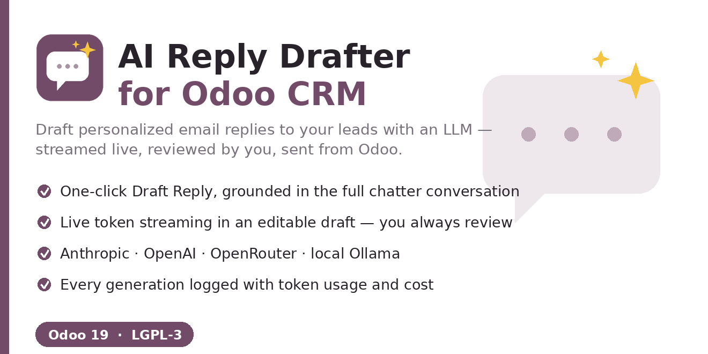
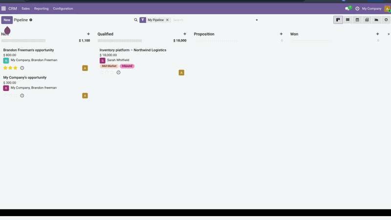

AI Reply Drafter adds a Draft Reply button to every lead and opportunity. It reads the lead's data and its full chatter conversation, sends them to the LLM you configure with your own system prompt, and streams back a personalized email draft — live, token by token — into an editable box. Tweak it, then send it straight to the customer or open the full composer. Every generation is logged with token usage and a cost estimate.

The draft is built from the lead's fields (contact, expected revenue, tags, source) and the most recent chatter messages, in chronological order. Replies reference what the customer actually asked — not a generic template.
The draft streams into an editable field. Nothing is sent until you click Send. Prefer the full composer? Edit in composer… opens Odoo's email composer pre-filled, for attachments and extra recipients.
Choose Anthropic (Claude), OpenAI, or local Ollama — and any OpenAI-compatible gateway such as OpenRouter via a base-URL override. One provider per configuration. API keys are stored as system parameters, never in code.
Every draft is recorded under CRM → AI Reply Logs with the provider, model, token counts, an indicative cost estimate, the lead, the user and a timestamp — so usage and spend stay visible.
Depends on Odoo's standard CRM and Mail apps. After installing, open Settings → AI Reply Drafter to pick a provider, paste your API key, set the model and your system prompt.
Install the Python SDK for the one provider you use (a clear in-app message tells you if it is missing):
pip install anthropicpip install openairequests, already shipped with OdooDrafting sends the lead's fields and chatter to the single provider you configure — the one place data leaves your Odoo instance. It is sent only to that provider, and you review every draft before anything is sent. For a fully on-premise setup with no external calls, use Ollama.
Authored by Emin Ahmed